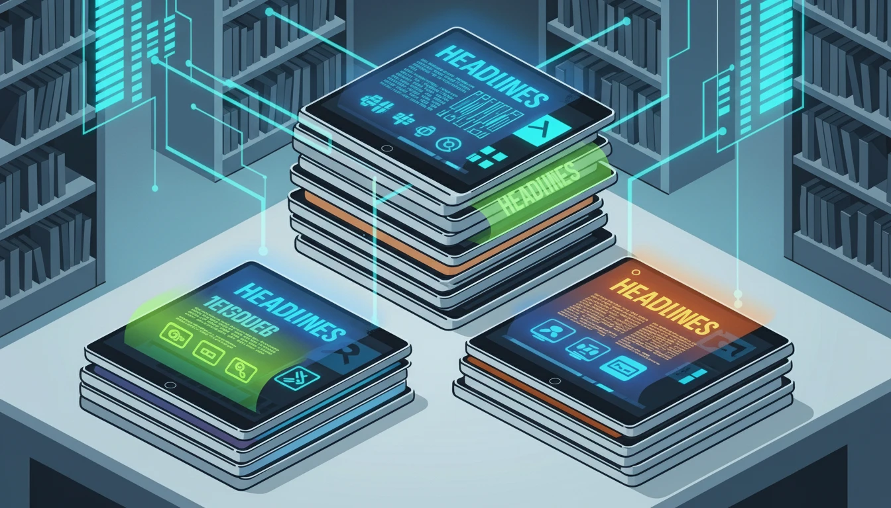

Top 10 Sales Blogs Every Rep Should Be Reading in 2025

The world of sales is constantly changing. To stay ahead, continuous learning isn't a luxury—it's a necessity. Subscribing to high-quality sales blogs is one of the most effective ways to sharpen your skills, learn new strategies, and stay motivated. Here is a curated list of the top 10 blogs every sales professional should have bookmarked in 2025.
The Ultimate Sales Reading List
-
The HubSpot Sales Blog
A powerhouse of content covering every imaginable sales topic. From high-level strategy to specific email templates, HubSpot offers practical, well-researched advice for sales reps, managers, and leaders at any stage of their career.
-
The Gong Labs Blog
If you're a fan of data-driven insights, this blog is for you. Gong analyzes millions of sales conversations to uncover what actually works. Their articles are packed with surprising statistics and actionable takeaways that can immediately improve your calls and emails.
-
Sales Gravy by Jeb Blount
Jeb Blount is a leading authority on sales psychology and prospecting. His blog offers a no-nonsense, motivational approach to tackling the toughest parts of sales, like overcoming rejection and building a powerful pipeline.
-
Predictable Revenue
Built on the outbound sales framework pioneered by Aaron Ross, this blog is essential reading for anyone in a B2B sales development role. It focuses on creating scalable, repeatable systems for generating new business.
-
The Brooks Group
With a focus on practical, real-world sales training, The Brooks Group provides excellent guides on everything from handling objections to mastering complex sales methodologies. Their content is straightforward and immediately applicable.
-
Sales Hacker
A community-driven platform that features content from a wide range of sales practitioners. Sales Hacker is great for getting diverse perspectives on the latest sales trends, tools, and tactics from people who are in the trenches every day.
-
LinkedIn Sales Solutions Blog
As the world's largest professional network, LinkedIn's official sales blog is the ultimate resource for mastering social selling. Learn how to leverage the platform to find prospects, build relationships, and close deals.
-
Jill Konrath's Sales Blog
Jill Konrath specializes in strategies for selling to busy, overwhelmed buyers. Her blog is a goldmine of tips on how to be more efficient, effective, and valuable in your sales approach, ensuring you stand out from the noise.
-
Close Sales Blog
Focused on the needs of inside sales teams, the Close blog offers actionable advice for high-velocity sales environments. They provide great content on cold calling, email automation, and CRM best practices.
-
Vengreso
Vengreso is a leader in the digital selling space. Their blog is dedicated to helping sales teams create more conversations with qualified buyers by leveraging digital channels and modern selling techniques.